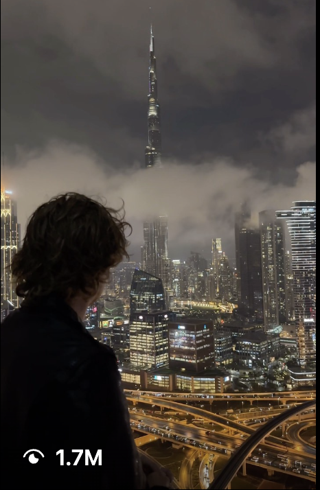

Shane Boyer skates New York for Canada Goose.
For Canada Goose's Defy the Elements, Shane Boyer put the jacket where his work already lives — on a skateboard, in the weather, across the city. The @shaneboyerr x Canada Goose film sells the product by never pitching it.
 #partner
#partner
Follower/like figures verified July 2026 (TikTok @shaneboyerr, Instagram @shaneboyer_). The Canada Goose film is Boyer's own #partner TikTok post.
Canada Goose builds for the weather, so it makes sense they went to Shane Boyer (@shaneboyerr) — a creator who has spent five years filming New York in every kind of light and season. His Defy the Elements film puts the jacket where his work already lives: on a board, in the cold, moving through the city with the brand simply in frame.
Boyer came up as a skater, and skate footage is still the spine of what he does for 2.5M+ followers. That heritage is exactly why the Canada Goose fit reads true — the jacket isn't styled onto a model, it's worn by someone actually skating a New York winter. The product earns its place by being useful in the shot.

The jacket in frame, never in a pitch
His Defy the Elements film is tagged #partner, but it doesn't behave like a spot. There's no hero shot of a price tag — just Boyer's usual cinematic New York with Canada Goose along for the ride. The brand borrows his credibility with a skate-and-city audience, and gets a film that looks like content those viewers already choose to watch.
The jacket doesn't get a pitch. It gets worn — in the weather, on a board, in his New York.
— The DGTL Influence view on Shane Boyer x Canada GooseWhy a heritage brand books a skater
Because reach without relevance is just noise. Boyer delivers a specific, hard-to-buy audience — people who follow POV New York and skate culture — and a look that makes technical outerwear feel lived-in rather than advertised. For a brand built on defying the elements, being shown surviving a real New York winter beats any studio lighting.

- Real use: the jacket is worn skating a real New York winter, not styled on a set.
- Skate heritage gives the partnership built-in credibility.
- #partner content that reads as his own cinematic city work.
- A specific, hard-to-buy skate-and-city audience of 2.5M+.
It's the creator-led play at its most natural: match a product to the person whose life already contains it, and let the footage do the arguing. Canada Goose wanted proof it defies the elements. Boyer filmed it.
The Canada Goose work
#partner Roots
Roots Weather
Weather Signature
Signature Golden hour
Golden hour Craft
CraftA network people actually trust.
80+ vetted creators, matched to your brand — not bolted on. Let's scope an activation that moves real numbers.